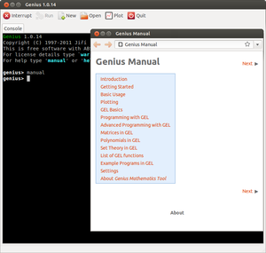
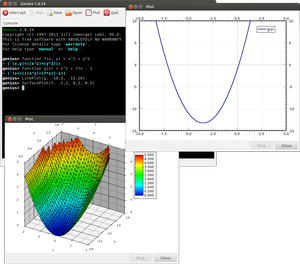
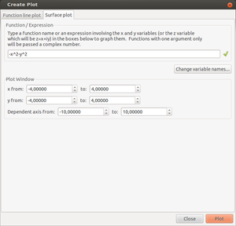

Genius
Dieser Artikel wurde für die folgenden Ubuntu-Versionen getestet:
Ubuntu 14.04 Trusty Tahr
Zum Verständnis dieses Artikels sind folgende Seiten hilfreich:
  Genius ist ein Mathematik-Programm, das mit Matlab oder ähnlichem vergleichbar ist. Es stellt mathematische Funktionen und Logarithmen bereit, um beispielsweise Polynomfunktionen zu Integrieren/Differenzieren oder Matritzen zu berechnen.
Grundsätzlich muss an dieser Stelle aber erwähnt werden, dass es kommerzielle Programme wie Matlab oder WolframAlpha  aufgrund mangelnder Funktionen nicht ersetzen kann. Für Schulaufgaben oder Berechnungen auf Kommandozeilenebene stellt es aber eine durchaus erwähnenswerte kostenfreie Alternative dar.
aufgrund mangelnder Funktionen nicht ersetzen kann. Für Schulaufgaben oder Berechnungen auf Kommandozeilenebene stellt es aber eine durchaus erwähnenswerte kostenfreie Alternative dar.
Installation¶
Genius kann direkt aus den offiziellen Paketquellen installiert [1] werden:
genius (universe, Kommandozeilenversion)
gnome-genius (universe, grafische Oberfläche)
 mit apturl
mit apturl
Paketliste zum Kopieren:
sudo apt-get install genius gnome-genius
sudo aptitude install genius gnome-genius
Bedienung¶
Startet man das Programm[2], erhält man ein Fenster, das eine Kommandozeile bereitstellt. In Genius müssen keine Variablen initialisiert werden und die Funktionsnamen sind weitestgehend intuitiv (jedoch auf Englisch, weshalb Namen teilweise leicht vom Deutschen abweichen können). Beispiel:
genius> a = 3 = 3 genius> a * 2 = 6 genius>
Polynomfunktionen¶
Um eine Funktion zu definieren, muss man diese mittels function initialiseren, also zum Beispiel
genius> function f(x) = x^3 = (`(x)=(x^3)) genius>
Die wichtigsten Befehle für Funktionen sind:
| Polynomfunktionen | |
| Befehl | Bedeutung |
PolynomialRoots(polynom) | Nullstellen ausrechnen (maximal bis Grad 4), das Polynom ist ein Vektor repräsentativ für das Ergebnis, zum Beispiel: x^3 + 2*x - 2 --> [-2, 2, 0, 1] |
SymbolicDerivative(f) | Differenzieren |
SymbolicNthDerivative(f, n) | N-te Differentiation |
NumericalIntegral(f, a, b) | Es kann lediglich das bestimmte Integral berechnet werden, nicht jedoch das unbestimmte. |
Plotten¶
 Funktionen können auch grafisch mittels Plot dargestellt werden. Es öffnet sich ein Fenster, in welches die einzelnen Funktionen eingetragen werden. Diese können entweder vorher definiert oder direkt in die Zeile geschrieben werden (siehe Bild).
Die Registerkarte "Surface Plot" ist dazu da, um im 3D-Bereich zu plotten. "Dependent axis" Ist gleichzusetzen mit "z from".
Matrizen¶
Definiert werden Matrizen relativ einfach, im Vergleich zu anderen Mathematikprogrammen:
genius> A = [0, 1, 1
> 1,0,1
> 1,1,0]
=
[0, 1, 1
1, 0, 1
1, 1, 0]
genius> Es ist aber ebenfalls möglich, alle Werte in eine Zeile zu schreiben:
genius> A=[0,1,1;1,0,1;1,1,0] = [0, 1, 1 1, 0, 1 1, 1, 0] genius>
Um eine Matrix zu Transformieren, ist sie lediglich mit "'" zu notieren, die Inverse erhält man mittels der Notation "^-1":
genius> A' = [0, 1, 1 1, 0, 1 1, 1, 0] genius> A^-1 = [-1/2, 1/2, 1/2 1/2, -1/2, 1/2 1/2, 1/2, -1/2] genius>
Genius bringt aber auch hier eine Vielzahl an Funktionen mit, um mit Matrizen zu arbeiten:
| Matrizen | |
| Befehl | Bedeutung |
LUDecomposition(A, &L, &R) | LR-Zerlegung. Die &-Zeichen bedeuten, dass eine Referenz auf eine Variable (muss nicht vorher initialisiert werden) übergeben wird und nicht die Variable selbst. Das hat zur Folge, dass eine Funktion mehr als einen Wert zurück geben kann. In diesem Fall Die linke untere und rechte obere Dreiecksmatrix. |
Determinant(A) | Determinante von A |
R = QRDecomposition(A, &Q) | Gibt die rechte obere Dreiecksmatrix der QR-Zerlegung zurück. Da Q als Referenz übergeben wird, erhält man auch diese. |
Eigenvalues(A) | Eigenwerte der Matrix A |
Eigenvectors(A) | Eigenvektoren der Matrix A. Ernüchternder Weise nur für 2x2 Matrizen. |
Eine Übersicht über alle Befehle findet man hier oder wenn bei Eingabe des Befehls help oder manual
Hilfe¶
Die Hilfe wird, wie bereits erwähnt, per Eingabe von help oder manual aufgerufen. Wenn man den Syntax eines Befehls nicht auswendig kennt, kann man per help Befehl dessen Syntax und eine Kurze Beschreibung anzeigen lassen. Gleichzeitig wird hierbei auch die Hilfe selbst in der Richtigen Registerkarte geöffnet, um genaueres nachlesen zu können.
Kommandozeile¶
Durch den Befehl genius ist es möglich, Genius auch über die Kommandozeile Rechenoperationen zu übergeben. Dies ist vor allem interessant, wenn man mit anderen Programmen auf die Ergebnisse zugreifen möchte. Realisieren kann man dies mittels der Übergabe einer Datei:
genius befehl.txt
Problembehebung¶
Beim Definieren einer Funktion kommt es zu folgender Fehlermeldung:
genius> function f(x) = x²+x-4 ERROR: syntax error before '�'
Grund dafür ist, dass Genius nicht mit den Hochzahlen umgehen kann. Diese müssen immer mit Zirkumflex(^) angegeben werden:
genius> function f(x) = x^2+x-4 = (`(x)=(((x^2)+x)-4))
- Erstellt mit Inyoka
-
 2004 – 2017 ubuntuusers.de • Einige Rechte vorbehalten
2004 – 2017 ubuntuusers.de • Einige Rechte vorbehalten
Lizenz • Kontakt • Datenschutz • Impressum • Serverstatus -
Serverhousing gespendet von